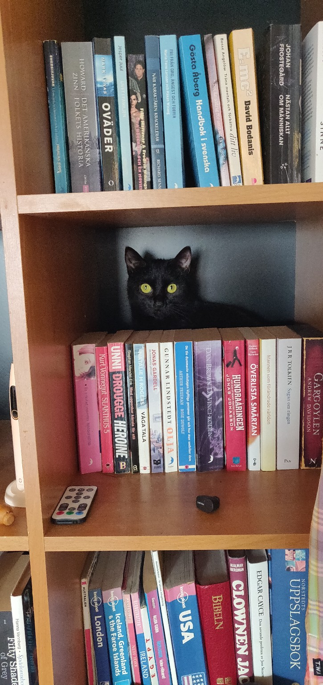
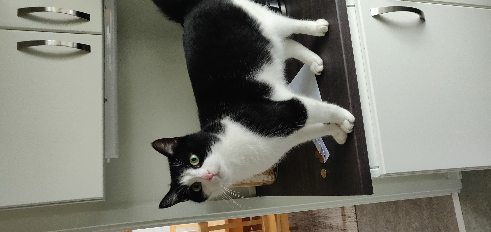
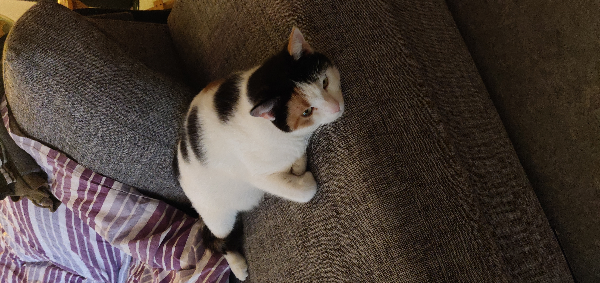
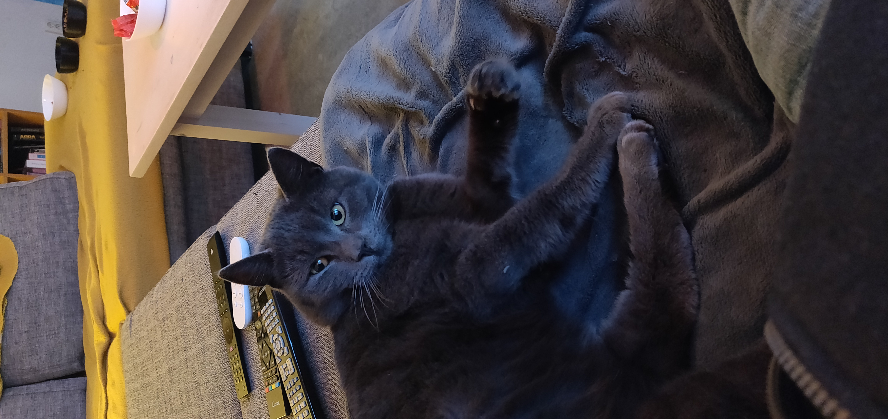

Help us improve System Checkmate. We use Google Analytics to understand visits and improve the site. Google Analytics will only run if you accept. Vercel Analytics and GoatCounter are separate services.
> ← back_to_home
> this_is_real: true > rescued_units: active
Real photos from cats we rescue and care for.



